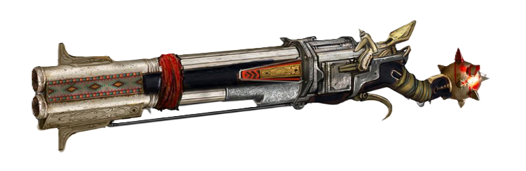

Here's the thing about Peluvia, it's been almost 900 years since the fall of Vecna. That's a long ass time. Even so the place is still crawling (haha) with the undead. So it's
no surprise they've designed the perfect anti-undead device.
Now this specific weapon has been blessed by Lathander, a god (minor G of course) they worship who represents the dawn and who hates the undead. This has imbued the weapon with the power
to prevent any undead it hits from restoring themselves, effectivly preventing their abillity to rise again. The sluggs and shells fired from this are also imbued with radiant strenght dealing an additional 1d4 of radiant damage. The morning
lord also guides the projectiles giving it a +1 to hit. Otherwise this weapon shares a lot of the common traits of a shotgun. If you're firing shells, that's gonna be a 30ft cone attack, dealing 3d4 piercing damage and if you choose slugs its
2d8 at 30/120 range.
The pump action design that Peluvia is famous for also lets you fire a lot more shells in rapid succession without having to reload. Those are pretty hard to find out west unless you order one of these from Peluvia directly
which of course and Smith & Westwood licensed store will be able to help you with. So if you're looking to buy the PPA 12g, you'll be looking at about 500g, while a normal NC double barreled will only cost around 30g.

A little history for those that are interested, while most OF you are probably familiar with the legendary heroes Zonk, Bruma, Günther, Galaereon and of course or very own Saint Shell, there was actually a secret sixth
member that vanquished Vecna. That's right! Our very own J. Smith was there the whole time, bet your history books won't mention that!